Your files, calendars and contacts, on your own server.
Cloudy is a cloud you run yourself: one container on your own machine, with apps for your phone and your computer. Your data stays on your server.
Free and open source under the MIT License. No ads, no analytics, no tracking.
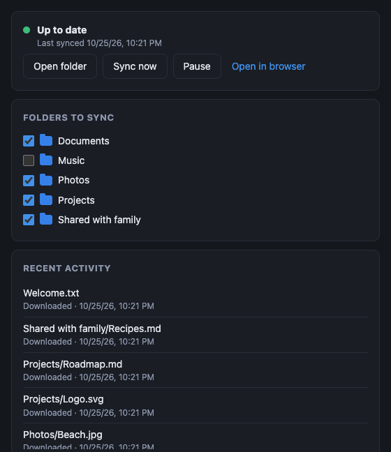
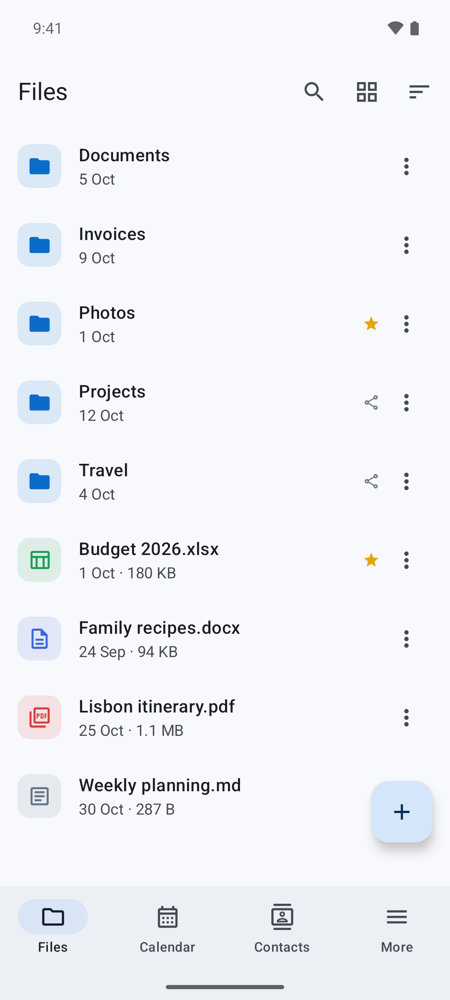
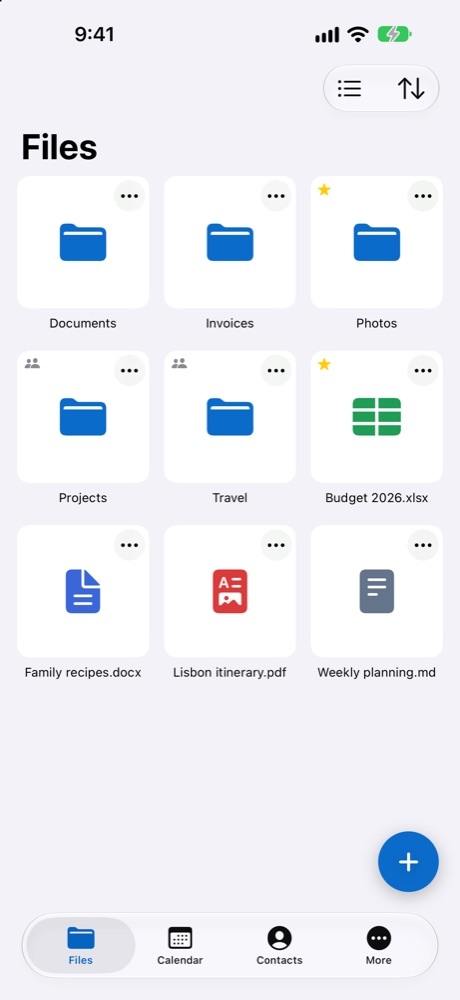
Everything you keep in a cloud
Store and share files, back up your photos, and keep your calendar and contacts in sync, from the browser, the Cloudy apps or the apps you already use.
Files
Upload whole folders by drag and drop, preview photos, video, PDF and office documents, edit text files, and get old versions back.
Sharing
Share with people and groups, read-only or editable, or send a link with a password and an expiry date. Links can also collect uploads.
Desktop sync
A Cloudy folder on your Mac, Windows or Linux computer that stays in sync both ways. Edits in two places keep both copies.
Photo backup Android only
New photos and videos go to your server in the background, on Wi-Fi only if you like. Keep files offline for when you have no signal.
Share to Cloudy
Send photos and files from any app's share menu straight into a folder, and scan paper documents to PDF.
Calendar and contacts
Use them on the web and in the apps, or sync with your phone's calendar and contacts, Thunderbird and DAVx⁵ over CalDAV and CardDAV.
Your data stays on your server
The apps talk to the server you sign in to and nothing else. The developer never receives your files, photos, calendars or contacts.
Kept on your server
- Your files, photos, versions and trash
- Calendars and contacts
- Your account, with the password stored as a scrypt hash
- The list of signed-in devices, which you can revoke
- Emails, sent through your own mail server if you set one up
Other services the apps use
- Google Play and the App Store, which install and update the phone apps
- GitHub, where the desktop app checks for updates (no account or file information)
- Google Play services, only when you scan a document on Android
- Sign-in
- Passkeys, or a password with two-factor codes from an authenticator app. Each device gets its own app password that you can revoke.
- Protection
- Repeated wrong passwords are slowed down per address and per account. Uploaded files can't run code inside Cloudy: web pages are downloaded, not opened.
- Your choice
- Delete your account and everything in it from the web or the apps, at any time.
Run your own server
Cloudy is one container with its database, the web app and office previews inside. It runs on any machine with Docker.
- Download the compose file on a machine with Docker.
- Choose the admin password and where your files should live, or keep the defaults.
- Start Cloudy and open
http://<server>:8080in your browser. - Put it behind HTTPS with your reverse proxy to use it from anywhere.
# 1. get the compose file
mkdir cloudy && cd cloudy
curl -fsSLO \
https://raw.githubusercontent.com/Fahed-Alhammadi/Cloudy/main/docker-compose.yml
# 2. optional: your admin password after ADMIN_PASSWORD: ${ADMIN_PASSWORD:-
# (left empty, one is generated and shown in docker logs cloudy)
nano docker-compose.yml
# 3. start, then open http://localhost:8080
docker compose up -dOn your phone and your computer
Every server includes the web app. Sign in to the apps with your server's address, your username and your password.
Android
Files, offline files, photo backup, document scanner, calendar and contacts.
iPhone
Files with Quick Look, Share to Cloudy, document scanner, calendar, contacts and Face ID lock.
In the App Store soon. Install Apple's TestFlight app first, then open the beta link on your iPhone.Mac, Windows and Linux
Keeps a folder in sync, from the menu bar or system tray. Updates itself.
.dmg or .pkg for Mac (signed and notarized), .exe for Windows, .AppImage or .deb for Linux.Prefer the apps you already have? Cloudy also speaks WebDAV, CalDAV and CardDAV, so Finder, Windows Explorer, rclone, Thunderbird, DAVx⁵ and Apple Calendar and Contacts can connect too.
A closer look
The main screens of the Android and iPhone apps.
Android
- Files
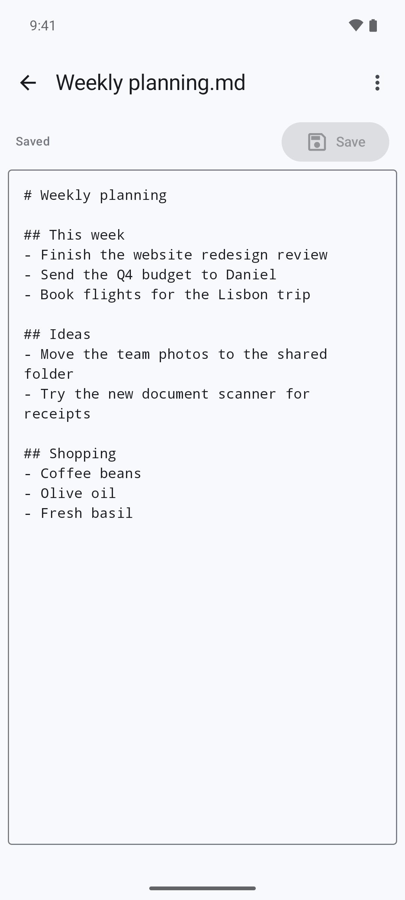
Text editor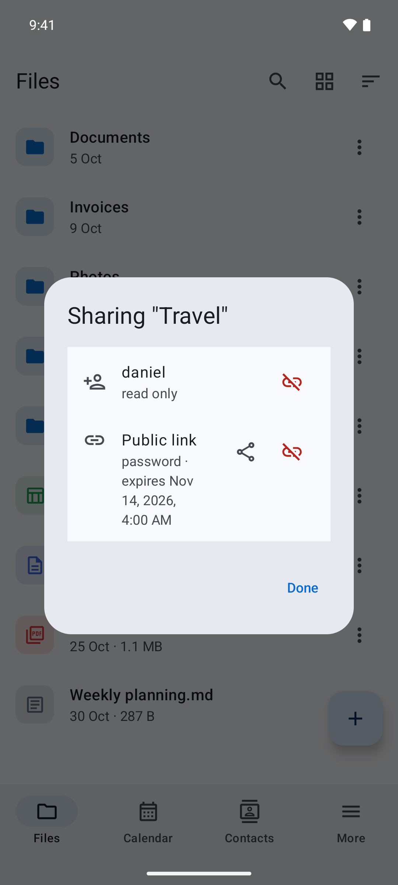
Sharing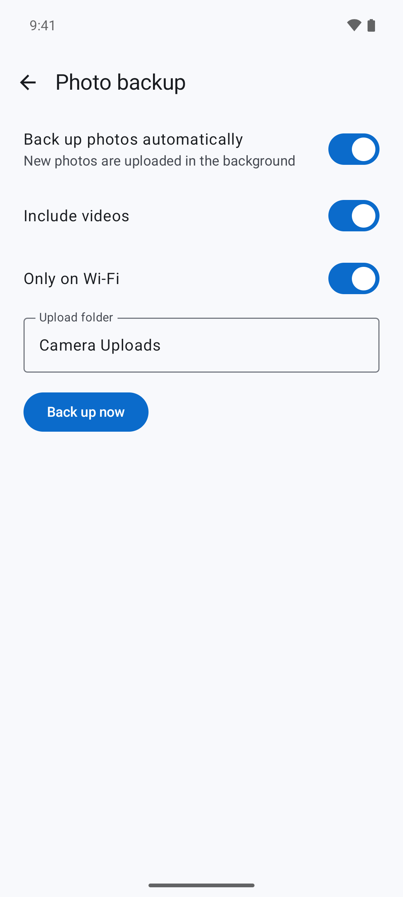
Photo backup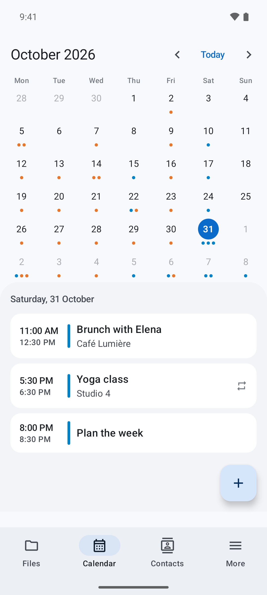
Calendar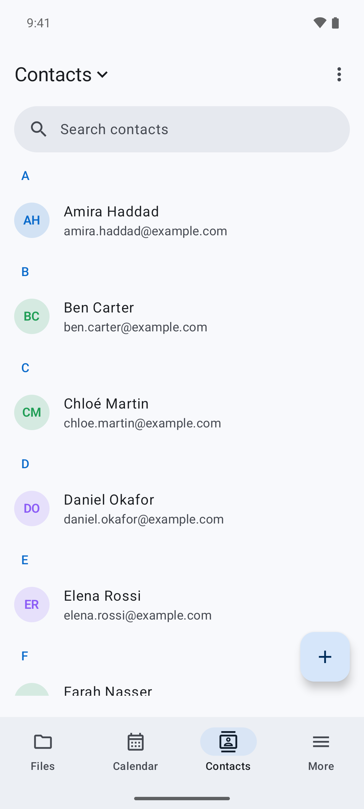
Contacts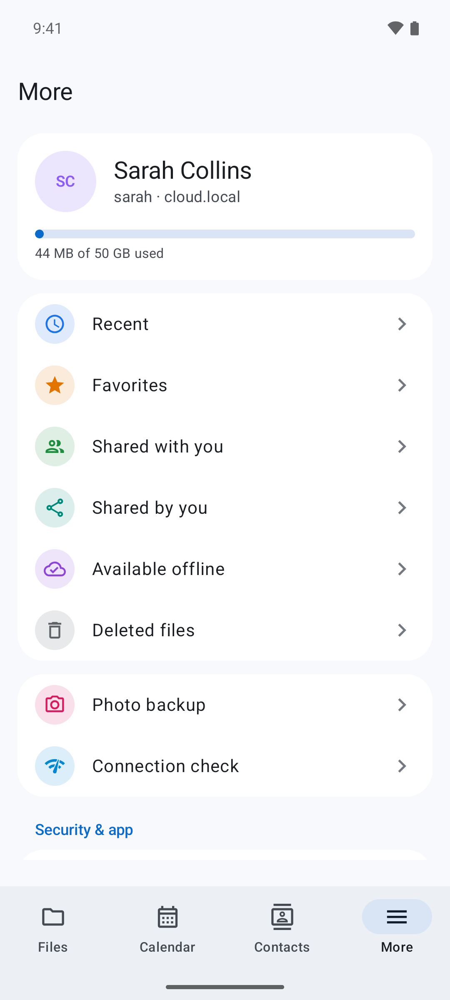
More
iPhone
- Files
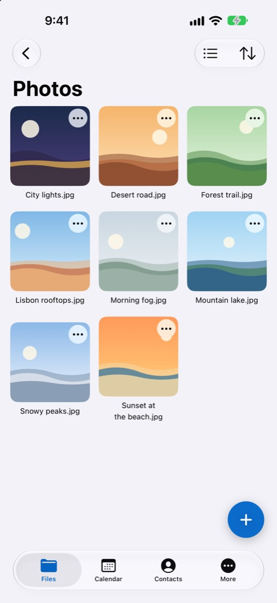
Grid view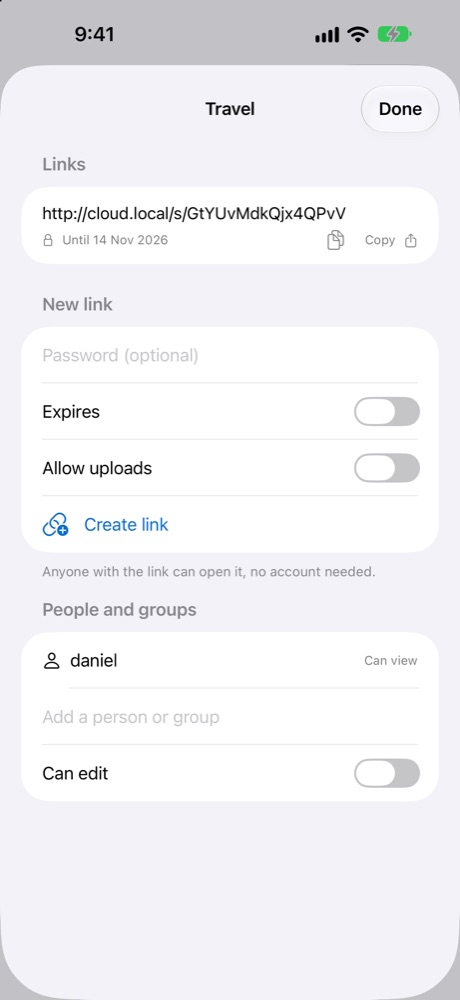
Sharing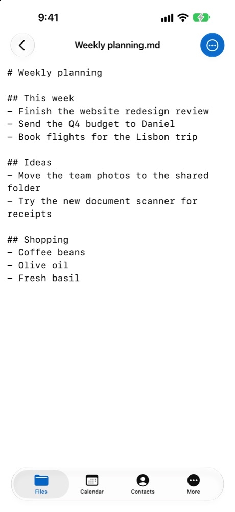
Text editor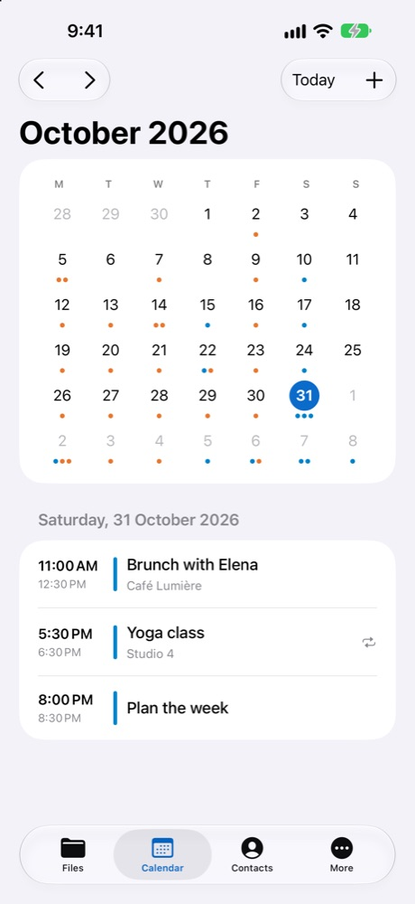
Calendar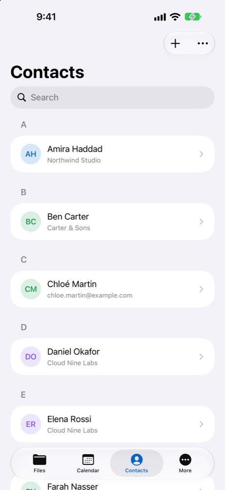
Contacts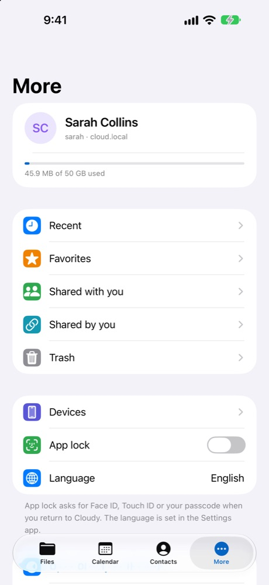
More